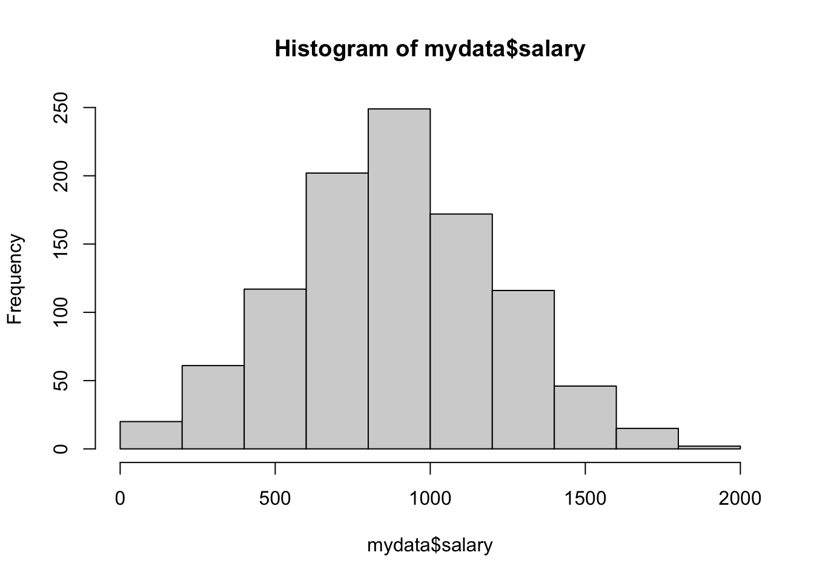
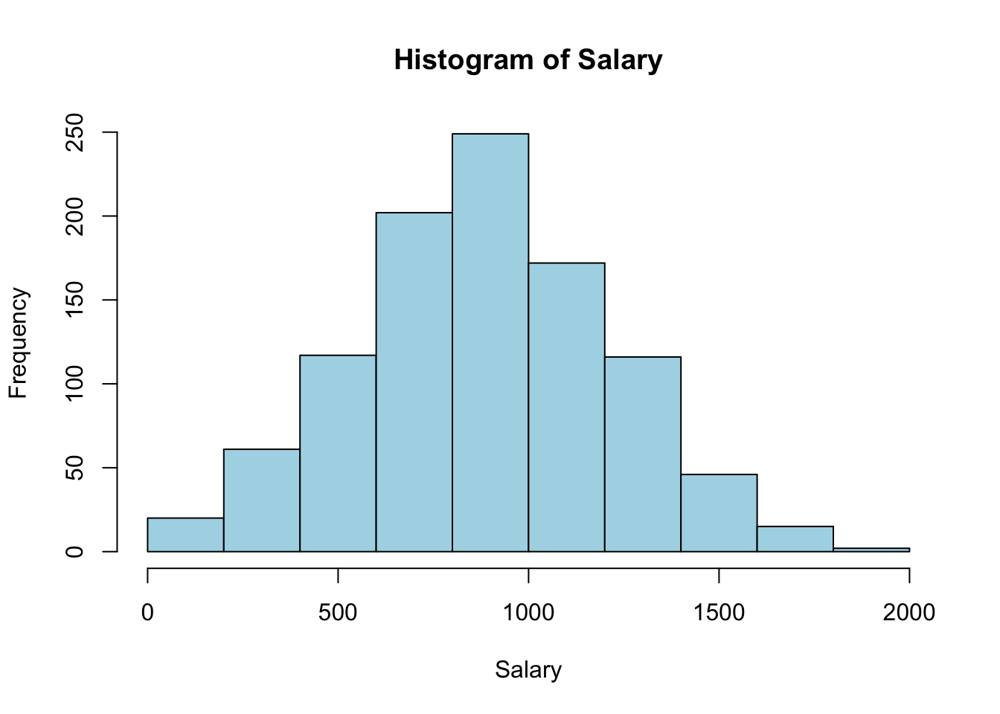
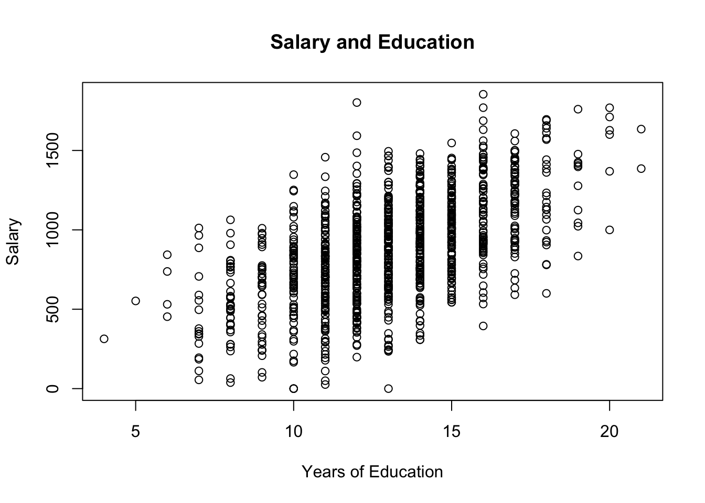

チャプター2 データを要約する
本章では，平均値や分散，相関係数などの基本的な統計学を復習します．
2.1 平均値
平均値を求めるにはmean()関数を用います．mean()関数の引数はベクトルでなくてはなりません．
mean(mydata) # mydataはベクトルではなく，データフレームなのでエラーになります次のように平均値を求めたい変数をサブセッティングして，ベクトルにする必要があります．
mean(mydata$salary)
## [1] 883.1841
mean(mydata$educ)
## [1] 13.0262.2 分散
分散を求めるにはvar()関数を用います．分散はデータのばらつきを把握するための統計量です1．
var(mydata$salary)
## [1] 111308.5
var(mydata$educ)
## [1] 7.4828072.3 標準偏差
分散は単位が2乗になっているので少しわかりづらいです．なので，分散の平方根をとって単位の次数を減らしたものが標準偏差です．標準偏差を求めるにはsd()関数を用います．
sd(mydata$salary)
## [1] 333.62922.4 ヒストグラム
図によってデータの分布を確認するには，ヒストグラムを用いるのが便利です．ヒストグラムを作図するにはhist()関数を用います．
hist(mydata$salary)
hist()関数には複数の引数があり，それらを指定することで見た目を変えることができます．
hist(mydata$salary, col = "lightblue", main = "Histogram of Salary", xlab = "Salary")
2.5 散布図
2つの変数の関係を図で確認するためには，散布図を用いるのが便利です．散布図を作成するにはplot()関数を使います．今わたしたちは，教育と年収の関係性に関心があるとしましょう．educと年収salaryの関係を次のように図示できます．
plot(mydata$educ, mydata$salary, main = "Salary and Education", xlab = "Years of Education", ylab = "Salary")
Exercise 2.1 次のことを考えてみてください．
- どのような関係が見て取れますか？
- そのような関係はどのようなメカニズム生じるのでしょうか？
- それは因果関係と言えるでしょうか？
- 3で，そのように答えた理由は何ですか？
2.6 相関係数
相関係数は，2つの変数の直線的な関係の強さを表します．相関係数\(\rho\)は，\(-1 \leq \rho \leq1\)の値を取ります．2つの変数の直線的な関係は，0に近いほど弱く，絶対値が1に近いほど強いです．相関係数が正のとき(\(\rho>0\))，散布図は右上がりの分布を描きます．相関係数が負のとき(\(\rho<0\))，散布図は右下がりの分布を描きます．
Rではcor()関数を用いることで，相関係数を求めることができます．educとsalaryの相関係数は0.577です．
cor(mydata$educ, mydata$salary)
## [1] 0.5771089Exercise 2.2 wage.csvのデータについて，次の指示に従ってください．
- 年齢(
age)の平均，分散，標準偏差を求めてください．また，ageのヒストグラムを作成してください． - 年齢(
age)と年収(salary)の散布図を描いて，さらに相関係数を求めてください． - 2の結果について考察しなさい．
厳密には
var()関数は不偏分散です．↩︎